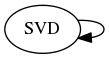

Master index
Index for ./+eegtoolkit/+featselection/@SVD
Dependency Graph for ./+eegtoolkit/+featselection/@SVD

Generated on Fri 25-Nov-2016 14:50:32 by
m2html
© 2005
 Master index
Master index Master index
Master index